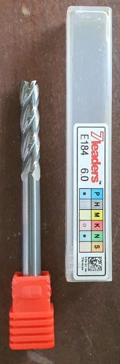

Computer Numerical Control (CNC) machining is a manufacturing process in which pre-programmed computer software dictates the movement of factory tools and machinery.
| First We have to turn on both the switch | |
|---|---|
| Place the workpiece at the correct place | |
| Use screws to secure the workpiece. Make sure we used the correct length so that the screw can secure the workpiece properly. | |
| Secure the 6mm diameter flat end mill onto the spindle |  |
| Set the Job Size according to the workpiece. | |
Plunge depth same as tool diameter
Go to edit depth 7mm
Step over not more than 50%
12000 rpm controlled by machine
Chip Load:
Cannot exceed 0.01 inch/min or 0.254mm/min
Better Finish - climb (but more force on spindle)
Depth 15.5
Add tabs (3 for coaster)
Tab dimensions 10 10 12mm & 2.5 to 3mm
| Set Z | |
|---|---|
| Set X & Y | 
|
| Before starting to cut the workpiece we need to turn the vacuum on so that some of the chips can be remove, |  |
| When cutting the workpiece we are required to wear ear protection and safety googles at all times due to the loud noise produced by the machine and the chips flying out during the process. |  |
| Coaster cutting process |

|
We were given an assignment to make our own furniture of our choice on Fusion360
Choice of Furniture: Shelf
| First I desgin the shelf on Fusion360. The slots are used to connect the pieces together |    
|
|---|---|
| Next, I have to project geometry the outlines and save it as a dxf file to put into the VCarvePro |  
 
 
 | >
| Fusion360 |
| Firstly I import the dxf files into VCarvePro. | 

|
|---|---|
| Set the correct jobsize |
|
| Place the parts neatly and try putting them closer but make sure to have enough space for the tool to cut | 
|
| Select the correct toolpath and change the setting according to our workpiece | 
|
Depth 18.5
Add tabs for each pieces at least 8 tabs for the shelves and 3 for the slots.
Tab dimensions 10 to 12mm & 2.5 to 3mm
| Edit the tool, make sure to check that the chip load do not exceed 0.01 inch/min or 0.254mm/min | 
|
|---|---|
| Include tabs | 

|
| Save the Toolpath: Save file select post processor - gcode mm | 
|
| Open file in software: NC-EAS(Y)Pro and go to tool measurement. Move to X 150, Y 75 than do the Z measurement |
  .jpeg)
|
| After the X, Y & Z is set we can proceed to start cutting the pieces | Slot 
BaseBackShelves
|
| Using the chisel to remove the workpiece |  |
| Sanding the pieces to remove rough surface |  |
| Assembly of the shelf |
    |